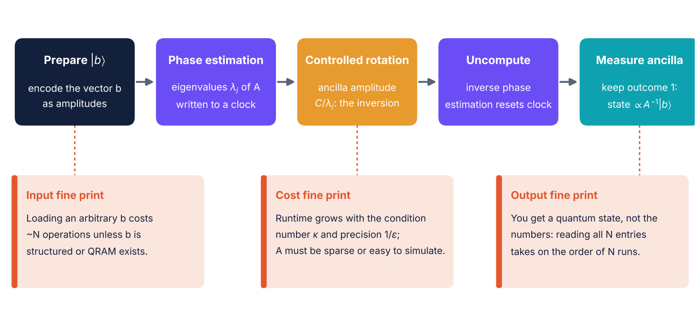
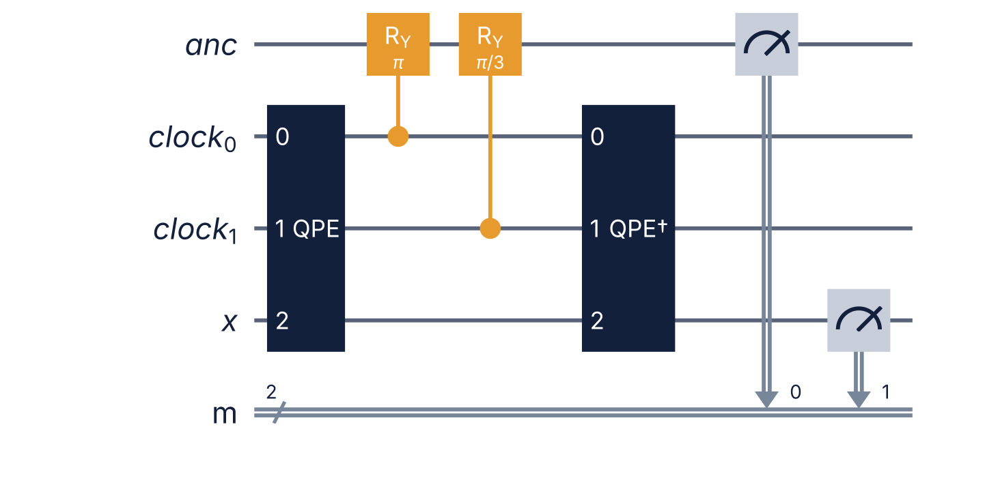
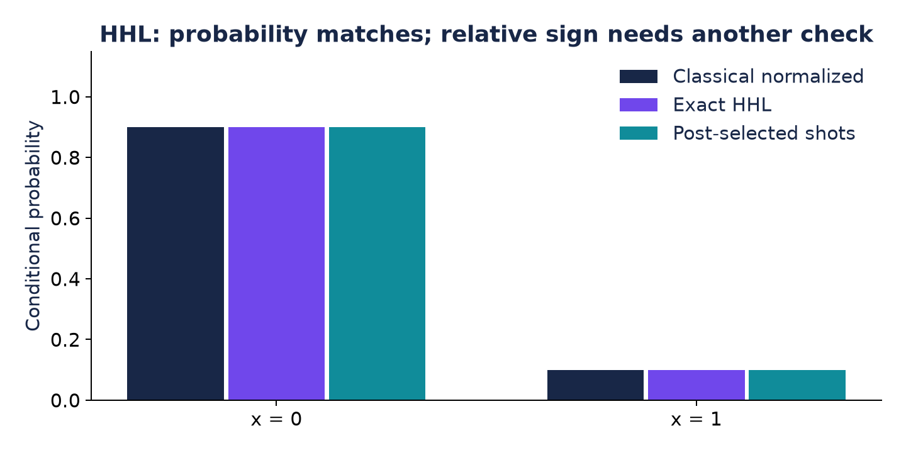

ในบทความนี้
In this post
Output contract — |x⟩ ต่างจาก x
ดาวน์โหลดประกอบซีรีส์
คู่มือฉบับเต็ม (PDF ภาษาอังกฤษ · 43 หน้า · 4.1 MB)
โค้ด ตัวอย่าง และแบบฝึก (ZIP)
บทที่ 4/7 · ดัดแปลงจากเอกสาร Quantum Algorithms for Programmers, Edition 1.0 หน้า 24–28 พร้อมโค้ดและคำอธิบายที่ตรวจซ้ำสำหรับเว็บ
HHL เตรียม quantum state ที่ amplitudes เป็นสัดส่วนกับคำตอบของ Ax=b กล่าวคือ |x⟩ = A⁻¹|b⟩ / ‖A⁻¹|b⟩‖ ผลลัพธ์จึงเป็น normalized state ไม่ใช่ array ที่เทียบแทน numpy.linalg.solve ได้ทันที หากโจทย์ต้องใช้ทุก xi ต้องนับต้นทุนอ่านผลเพิ่ม
ความน่าสนใจของ quantum linear-systems algorithms อยู่ที่ dependence ต่อ dimension N ซึ่งอาจเป็น polylogarithmic ภายใต้ efficient access, sparsity หรือโครงสร้างที่เหมาะสม และ condition number ที่ควบคุมได้ สูตร original HHL มี dependence ต่อ sparsity s, condition number κ และ precision ε ที่สำคัญมาก การอ่านเฉพาะ log N ทำให้เข้าใจ promise ผิด
สำหรับบทนี้เราจะยังไม่อ้าง advantage ใช้ matrix เล็กที่ classical solve ตรวจได้ตรง ๆ เพื่อมองเห็น data contract ของ HHL ทั้งการเตรียม |b⟩ การจัดการ eigenvalues และความต่างระหว่าง amplitude กับ probability
Worked example — คำตอบมีเครื่องหมายลบ
เลือก A = [[1.5, 0.5], [0.5, 1.5]] และ b = [1,0] จะได้ x = [0.75,−0.25] มี eigenvalues 1 และ 2 จึงมี κ=2 ส่วน normalized solution เป็น [3/√10,−1/√10] และ probability ของสอง outcomes เป็น [0.9,0.1]
ใน eigenbasis ของ A การกลับ matrix คือการเปลี่ยน coefficient βj เป็น βj/λj เราใช้ phase estimation เพื่อเขียน eigenvalue ลง clock register แล้ว controlled rotation บน ancilla ทำให้ amplitude ฝั่ง ancilla=1 เป็น C/λj เมื่อ uncompute clock และเลือกเฉพาะ ancilla=1 จะเหลือ solution state


เลือก evolution time t=π/2 ทำให้ eigenvalue 1 และ 2 มี phase 1/4 กับ 1/2 พอดีใน clock สอง qubits ไม่เกิด finite-precision error ในตัวอย่างนี้ เมื่อ C=1 โอกาสผ่าน post-selection คือ ½·1² + ½·(½)² = 0.625 การสุ่มที่ไม่ผ่านเป็นส่วนหนึ่งของต้นทุน
Implementation — circuit นี้ผูกกับ spectrum


ส่วนโค้ดสำหรับอ่านแนวคิด ใช้ไฟล์เต็มพร้อม imports จาก companion และคำสั่งใน Run & explore ด้านล่าง
def hhl_circuit(measure=True):
anc = QuantumRegister(1, "anc")
clock = QuantumRegister(2, "clock")
x = QuantumRegister(1, "x")
qc = QuantumCircuit(anc, clock, x)
est = qpe(clock, x)
qc.append(est, clock[:] + x[:])
# Only 01 and 10 occur: these two controls implement this spectrum's lookup.
qc.cry(math.pi, clock[0], anc[0])
qc.cry(math.pi / 3, clock[1], anc[0])
qc.append(est.inverse(), clock[:] + x[:])
if measure:
m = ClassicalRegister(2, "m")
qc.add_register(m)
qc.measure(anc[0], m[0])
qc.measure(x[0], m[1])
return qc
def exact_result():
# Statevector index order: x clock1 clock0 anc. anc is least significant.
state = np.asarray(Statevector(hhl_circuit(False)).data)
accepted = state[1::2]
success = float(np.vdot(accepted, accepted).real)
# The clock must be 00 after uncomputation; indices 1 and 9 hold x=0,1.
solution = state[[1, 9]] / math.sqrt(success)
return success, solutionclock 01 หมายถึง λ=1 และ clock 10 หมายถึง λ=2 จึงใช้ rotation π กับ π/3 จากสูตร 2·arcsin(C/λ) ได้ตรง ๆ ตัวควบคุมทีละ clock bit ใช้ได้เพราะมีเฉพาะสอง clock states นี้ ถ้าเปลี่ยน A ให้มี phase 11 หรือ phase ไม่ลง bin การใส่ rotation เดิมจะไม่ใช่ reciprocal lookup ที่ถูกต้องอีกต่อไป
โค้ด helper สร้าง exp(iAt) ด้วย dense scipy.linalg.expm เพื่อสาธิต matrix 2×2 เท่านั้น การสร้าง unitary ของ matrix ใหญ่แบบนี้ไม่ใช่ efficient Hamiltonian simulation ใน HHL theorem ต้องมีวิธีเข้าถึง A และ implement evolution อย่างเหมาะสม
ใน exact_result() qubit ordering คือ x,clock1,clock0,anc จากซ้ายไปขวา เราจึงเลือก indices 1 และ 9 ซึ่งเป็น clock=00 และ anc=1 แล้ว normalize ด้วยโอกาสผ่านทั้งหมด test อีกตัวตรวจว่า clock กลับเป็น 00 จริงหลัง uncomputation
Readout — probability ตรงยังไม่พอ
ผลรันที่บันทึก 24 November 2026
Classical solution: [ 0.75 -0.25]
Normalized solution amplitudes: [ 0.948683 -0.316228]
Exact post-selection probability: 0.625000
Exact conditional probabilities: [0.9 0.1]
Sampled conditional probabilities: [0.8997 0.1003]; kept=12597/20000

ผล exact ตรง [0.9,0.1] และ shots ที่ผ่าน 12,597 จาก 20,000 ให้ [0.8997,0.1003] แต่ histogram นี้ไม่แสดงเครื่องหมายลบใน x1 state [3/√10,+1/√10] จะให้ histogram เดียวกัน จึงต้องตรวจ state รวม relative phase ด้วย
tests ใช้ solution จาก np.linalg.solve เป็น reference แล้วเทียบ conditional statevector โดยยอมให้ต่าง global phase ได้ แต่ไม่ยอมให้ relative sign เปลี่ยน หากอยู่บน hardware ต้องออกแบบ measurement ใน basis อื่น เช่นหา expectation ของ X เพื่อแยก relative sign ของตัวอย่าง real-valued นี้
HHL ตัด norm ของ x ออกด้วย normalization และการอ่านทุกองค์ประกอบของ vector ขนาด N ที่ precision กำหนดต้องใช้หลายสำเนาของ state ความหวังจึงอยู่กับ observable หรือคุณสมบัติสรุปที่วัดได้ด้วย budget ที่เหมาะสม ไม่ใช่การอ่าน array ใหญ่ทั้งหมดฟรี
Fine print — ตรวจสามขอบเขตก่อนพูดว่า exponential
| Boundary | Engineering question |
|---|---|
| Input | เตรียม |b⟩ จาก compact recipe ได้หรือจำเป็นต้องโหลด N ค่า |
| Matrix access | A มี sparsity หรือโครงสร้างที่ทำ evolution ได้มีประสิทธิภาพหรือไม่ |
| Conditioning | κ โตอย่างไรเมื่อขนาดระบบเพิ่ม และ precision ที่ต้องการคือเท่าไร |
| Output | ต้องการ observable กี่ตัว หรือ solution vector ทุกค่า |
| Classical baseline | ใช้ sparse solver, preconditioning หรือ sampling algorithm ที่ดีแล้วหรือยัง |
บทความ “Read the fine print” ของ Aaronson ชี้ให้เห็นต้นทุนเหล่านี้ ขณะที่งาน quantum-inspired algorithms เช่นของ Tang แสดงว่าบาง data-access assumptions เปิดโอกาสให้ classical algorithm แข็งแรงขึ้นด้วย การเปรียบเทียบต้องให้ทั้งสองฝ่ายเข้าถึง input ภายใต้เงื่อนไขที่เทียบกันได้
ข้อสรุปของตัวอย่างคือเราเตรียม normalized solution state ได้ถูกต้องสำหรับ spectrum ที่ออกแบบไว้ ยังไม่มี end-to-end speedup ในการแก้ linear system บนเครื่องของเรา ขั้นต่อไปคือ QAOA ซึ่งมี quantum circuit อยู่ใน optimization loop แทนการคำนวณคำตอบด้วยสูตรสำเร็จ
Run & explore — ลงมือทดลอง
Complete code · HHLTests · Exercise · Setup & troubleshooting
ใช้ Python 3.12–3.13 และ virtual environment ตาม README ไม่ต้องใช้ API key หรือ quantum hardware หากยังไม่ติดตั้งให้ทำตามตอน 1 หรือ README
# From the companion root, with the virtual environment active
python hhl_2x2.py
python -m unittest discover -s tests -p test_algorithms.py -k HHLTests -vลองต่อด้วยตัวเอง
คำนวณ ⟨X⟩ ของ normalized solution แล้วเปรียบเทียบกับ state ที่เปลี่ยน −0.25 เป็น +0.25 อธิบายว่าทำไม histogram ใน Z basis เหมือนกันแต่ state ไม่เหมือนกัน อย่าเปลี่ยน A โดยคง reciprocal rotation เดิม
Sources & verification — แหล่งอ้างอิง
Primary sources และขอบเขตการตรวจ
เอกสารผู้เขียนเป็นต้นทางของคำอธิบายและภาพที่ระบุ ส่วนลิงก์ข้างล่างเป็นเอกสารวิจัยและมาตรฐานที่ใช้ตรวจข้ออ้าง โค้ดรันซ้ำบน Python 3.13, Qiskit 2.6.2, Aer 0.18.4, NumPy 2.5.5 และ SciPy 1.18.1 วันที่ 24 November 2026 ผลทั้งหมดเป็น local simulation หรือค่าตัวอย่างที่ระบุ ไม่มีการรัน hardware
- Harrow, Hassidim & Lloyd. Quantum algorithm for solving linear systems of equations (2009).
- Aaronson. Quantum machine learning algorithms: read the fine print (2015).
- Childs, Kothari & Somma. Quantum linear systems with exponentially improved dependence on precision (2017).
- Tang. A quantum-inspired classical algorithm for recommendation systems (2019).
Output contract: |x⟩ differs from x
Download the series resources
Complete guide (English PDF · 43 pages · 4.1 MB)
Code, examples and exercises (ZIP)
Part 4/7. Adapted from Quantum Algorithms for Programmers, Edition 1.0, pp. 24–28, with web explanations and rerun code.
HHL prepares a quantum state with amplitudes proportional to the solution of Ax=b: |x⟩ = A⁻¹|b⟩ / ‖A⁻¹|b⟩‖. It returns a normalized state, not an array interchangeable with numpy.linalg.solve. If every xi is required, include the cost of recovering those entries.
Quantum linear-systems algorithms can have polylogarithmic dependence on dimension N under suitable access and structural assumptions. Sparsity s, condition number κ and precision ε also affect runtime. Reading only the log N term hides much of the contract.
We make no advantage claim for this lesson. A tiny matrix lets classical arithmetic verify the entire example while exposing state preparation, eigenvalue processing, and the distinction between amplitudes and probabilities.
Worked example: keep track of the negative entry
Choose A = [[1.5,0.5],[0.5,1.5]] and b = [1,0]. The classical solution is x = [0.75,−0.25]. Eigenvalues are 1 and 2, giving κ=2. The normalized solution is [3/√10,−1/√10], so measurement probabilities are [0.9,0.1].
In A's eigenbasis, inversion replaces coefficient βj with βj/λj. Phase estimation writes eigenvalue information to a clock. A controlled ancilla rotation places amplitude C/λj on ancilla=1. Uncompute the clock and post-select that ancilla outcome to retain the solution state.
Evolution time t=π/2 maps eigenvalues 1 and 2 to phases 1/4 and 1/2, exactly representable by two clock qubits. With C=1, post-selection succeeds with probability ½·1² + ½·(½)² = 0.625. Rejected attempts belong in the cost ledger.
Implementation: this circuit is tied to its spectrum
Implementation excerpt. Use the complete companion file with its imports and the Run and explore commands below.
def hhl_circuit(measure=True):
anc = QuantumRegister(1, "anc")
clock = QuantumRegister(2, "clock")
x = QuantumRegister(1, "x")
qc = QuantumCircuit(anc, clock, x)
est = qpe(clock, x)
qc.append(est, clock[:] + x[:])
# Only 01 and 10 occur: these two controls implement this spectrum's lookup.
qc.cry(math.pi, clock[0], anc[0])
qc.cry(math.pi / 3, clock[1], anc[0])
qc.append(est.inverse(), clock[:] + x[:])
if measure:
m = ClassicalRegister(2, "m")
qc.add_register(m)
qc.measure(anc[0], m[0])
qc.measure(x[0], m[1])
return qc
def exact_result():
# Statevector index order: x clock1 clock0 anc. anc is least significant.
state = np.asarray(Statevector(hhl_circuit(False)).data)
accepted = state[1::2]
success = float(np.vdot(accepted, accepted).real)
# The clock must be 00 after uncomputation; indices 1 and 9 hold x=0,1.
solution = state[[1, 9]] / math.sqrt(success)
return success, solutionClock 01 encodes λ=1 and clock 10 encodes λ=2. The rotation rule 2·arcsin(C/λ) gives π and π/3. Controlling each clock bit separately is valid because only these two exact states occur. Changing A to produce clock 11 or off-grid phases invalidates this simple reciprocal lookup.
The helper constructs exp(iAt) using dense scipy.linalg.expm for a 2×2 demonstration. Building a large dense unitary this way is not the efficient Hamiltonian access required by the theorem.
In exact_result(), displayed state order is x,clock1,clock0,anc. Indices 1 and 9 have clock=00 and anc=1. We normalize those amplitudes using the total acceptance probability. A separate test confirms that uncomputation actually resets the clock.
Readout: matching probabilities is insufficient
Captured run, 24 November 2026
Classical solution: [ 0.75 -0.25]
Normalized solution amplitudes: [ 0.948683 -0.316228]
Exact post-selection probability: 0.625000
Exact conditional probabilities: [0.9 0.1]
Sampled conditional probabilities: [0.8997 0.1003]; kept=12597/20000The exact probabilities match [0.9,0.1]. Of 20,000 shots, 12,597 pass selection and give [0.8997,0.1003]. Yet the histogram hides the negative sign of x1. The state [3/√10,+1/√10] would produce the same histogram.
Our tests compare the conditional statevector with the normalized np.linalg.solve reference, allowing a global phase but preserving relative sign. On hardware, additional measurement bases are needed. For this real-valued example, an X expectation can distinguish the relative sign.
Normalization also removes the scale of x. Recovering every entry of a large vector to specified precision requires many state copies. The useful output contract is often an observable or aggregate property with a manageable estimation budget, not free access to a large array.
Fine print: inspect the boundaries before claiming exponential gain
| Boundary | Engineering question |
|---|---|
| Input | Can |b⟩ be prepared from a compact recipe, or must N entries be loaded? |
| Matrix access | Does A permit efficient evolution through sparsity or other structure? |
| Conditioning | How does κ grow with size, and what precision is required? |
| Output | Are a few observables sufficient, or is the full vector required? |
| Classical baseline | Have sparse solvers, preconditioning and sampling methods been considered? |
Aaronson's “Read the fine print” explains these boundary costs. Quantum-inspired work such as Tang's also shows how some data-access assumptions can strengthen classical algorithms. Both sides need comparable input access.
This experiment correctly prepares a normalized solution state for its engineered spectrum. It establishes no end-to-end linear-solving speedup. Next comes QAOA, where a parameterized quantum circuit sits inside a classical optimization loop.
Run and explore
Complete code · HHLTests · Exercise · Setup & troubleshooting
Use Python 3.12–3.13 and the README virtual environment. No API key or quantum hardware is required. If setup is incomplete, follow part 1 or the README.
# From the companion root, with the virtual environment active
python hhl_2x2.py
python -m unittest discover -s tests -p test_algorithms.py -k HHLTests -vYour experiment
Compute ⟨X⟩ for the normalized solution and for the state with −0.25 changed to +0.25. Explain why their Z-basis histograms agree while their states differ. Do not change A without redesigning reciprocal rotations.
Sources and verification
Primary sources and verification scope
The author’s guide supplies the credited explanations and illustrations. Linked papers and standards support the claims. Code was rerun locally on 24 November 2026 with Python 3.13, Qiskit 2.6.2, Aer 0.18.4, NumPy 2.5.5 and SciPy 1.18.1. Results are local simulations or explicitly hypothetical inputs; no quantum hardware was used.
- Harrow, Hassidim & Lloyd. Quantum algorithm for solving linear systems of equations (2009).
- Aaronson. Quantum machine learning algorithms: read the fine print (2015).
- Childs, Kothari & Somma. Quantum linear systems with exponentially improved dependence on precision (2017).
- Tang. A quantum-inspired classical algorithm for recommendation systems (2019).